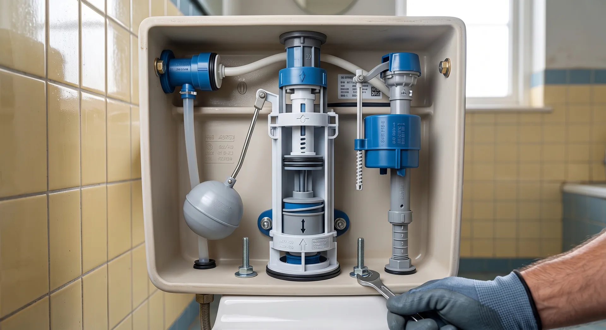

Common causes of running toilets and how to fix them
Discover the common causes of running toilets and learn how to fix them effectively with Maine Toilet Repair.

A running toilet is a common plumbing issue that can waste a significant amount of water and increase your utility bills. Understanding the causes and fixes can save you time and money. This article covers the common causes of running toilets and practical solutions to address them.
What is a running toilet?
A running toilet is a toilet that continuously runs water into the bowl after flushing, rather than stopping once the tank is filled. This condition can lead to increased water bills and may indicate underlying plumbing issues.
What causes running toilets?
Several factors can lead to a running toilet. Here are the most common causes:
- Flapper Issues: The flapper is a rubber seal at the bottom of the tank. If it doesn't close properly, water will leak into the bowl.
- Fill Valve Malfunction: The fill valve controls the water level in the tank. If it's faulty, it may not shut off when the tank is full.
- Chain Problems: The chain connecting the flush handle to the flapper can become tangled or too loose, preventing the flapper from sealing.
- Overflow Tube Issues: If the water level is too high, it can flow into the overflow tube and continuously drain into the bowl.
- Corrosion and Mineral Build-up: Over time, mineral deposits can affect the performance of the flapper and fill valve, leading to leaks.
How to fix a running toilet
Fixing a running toilet often involves simple adjustments or replacements. Here's a step-by-step guide:
- Check the Flapper: Open the tank and inspect the flapper. If it's warped or damaged, replace it with a new one. This is a common service we provide at Toilet Leak Repair in Maine.
- Adjust the Fill Valve: Ensure the fill valve is set to the correct height. If it's too low, water will continuously run into the overflow tube. Adjust the float arm accordingly.
- Inspect the Chain: Make sure the chain isn't too loose or tangled. Adjust it so that there's a slight slack when the flapper is closed.
- Examine the Overflow Tube: If water is consistently flowing into the overflow tube, lower the float until the water level is below the tube's opening.
- Clean or Replace Parts: If you notice mineral build-up, clean the affected parts or consider replacing them. Regular maintenance can prevent future issues.
Common mistakes to avoid
When addressing a running toilet, homeowners often make mistakes that can worsen the problem:
- Ignoring the Issue: A running toilet can waste up to 200 gallons of water per day. Ignoring it can lead to higher bills.
- Using Incorrect Parts: Always use parts that are compatible with your toilet model. Mismatched parts can lead to further leaks.
- Over-tightening Connections: When replacing parts, over-tightening can crack the tank or other components.
- Neglecting Regular Maintenance: Regular checks and maintenance can prevent running toilets and extend the lifespan of your plumbing fixtures.
When to call a professional
If your attempts to fix the running toilet fail, it may be time to call a professional. MaineToilet Repair Co. specializes in Running Toilet Repair in Maine and can quickly diagnose and resolve the issue. We recommend seeking help if:
- You notice continuous leaks after trying to fix the flapper or fill valve.
- There are signs of water damage around the base of the toilet.
- You are uncertain about the repair process or lack the necessary tools.
Frequently Asked Questions
- How much does it cost to fix a running toilet? Typical costs range from $50 to $150, depending on the issue and parts needed.
- Can I fix a running toilet myself? Yes, many homeowners can fix a running toilet with basic tools and parts from a hardware store.
- How long does it take to repair a running toilet? Most repairs take about 30 minutes to an hour, depending on the complexity of the issue.
- What if my toilet keeps running after replacing the flapper? If the problem persists, check the fill valve and overflow tube for issues.
- Are there any long-term solutions for running toilets? Regular maintenance and timely repairs can prevent the recurrence of running toilets.
Get help with Toilet Repair in Maine
If you're dealing with a running toilet and need professional assistance, contact MaineToilet Repair Co. for reliable service. Our experienced team is ready to help you resolve your plumbing issues quickly and efficiently.
Call us today at +18338450906 for same-day service!